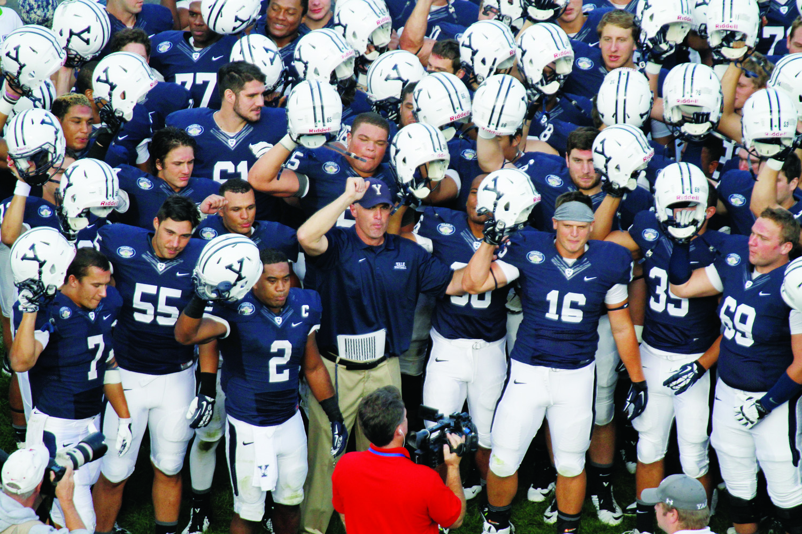
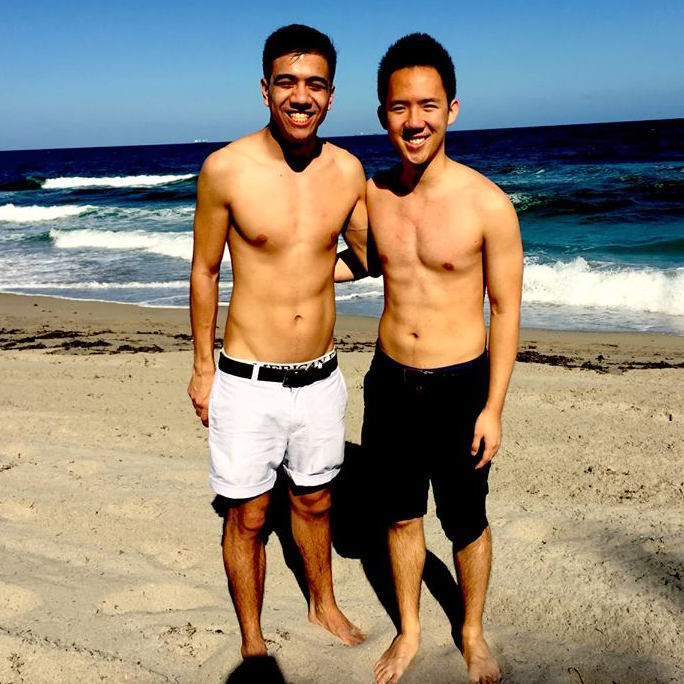

2020 — Chronicling Ivy League recruitment: The summer months
Bacon ipsum dolor amet salami tenderloin shoulder tail t-bone bresaola ground round tongue boudin chuck kevin cupim flank brisket andouille. Porchetta fatback leberkas flank shank shoulder tenderloin.
University
2020 — Chronicling Ivy League recruitment: The summer months
Bacon ipsum dolor amet salami tenderloin shoulder tail t-bone bresaola ground round tongue boudin chuck kevin cupim flank brisket andouille. Porchetta fatback leberkas flank shank shoulder tenderloin.
Breaking
Title IX Steering Committee promises changes following YCC
Last night, the Native American Law Students Association brought to campus a genre-defying work that tackled a variety of urgent but under-addressed national issues.

Sports
University plans new wellness website amid focus on mental health
This fall, the University is expected to launch a comprehensive “wellness” website that centralizes information on mental health, spiritual well-being and clinical care.
Arts
More students take courses at SOM, University wide
Arts
ENGLISH: Take the mic

Opinion
National Sexual Misconduct Survey Released
Bacon ipsum dolor amet salami tenderloin shoulder tail t-bone bresaola ground round tongue boudin chuck kevin cupim flank brisket andouille. Porchetta fatback leberkas flank shank shoulder tenderloin.
Arts
With rediscovery of dinosaur species, Peabody renames skeleton
Scitech